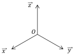
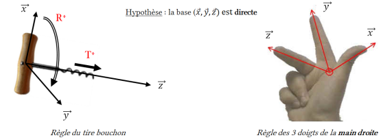

Notion de repère
Définition : Repère
Un repère R de l'espace (E) de dimension 3 est constitué par :
un point origine O,
une base \((\vec x, \vec y, \vec z)\).
Le repère R se note R\((O,\vec x, \vec y, \vec z)\).

Remarque : Repère orthonormé direct
Les bases et les repères utilisés en mécanique du solide sont orthonormés, c'est à dire que les vecteurs de bases sont :
deux à deux orthogonaux : \(\vec x \perp \vec y\), \(\vec x \perp \vec z\) et \(\vec y \perp \vec z\) (→ "ortho")
unitaires : \(\Vert \vec x \Vert = \Vert \vec y \Vert = \Vert \vec z \Vert = 1\) (→ "normé")
Très souvent, la base \((\vec x, \vec y, \vec z)\) est directe (ou le repère \((O,\vec x, \vec y, \vec z)\) est direct). Une base directe peut être idéntifiée grâce à la règle du tire-bouchon ou des 3 doigts de la main droite.
